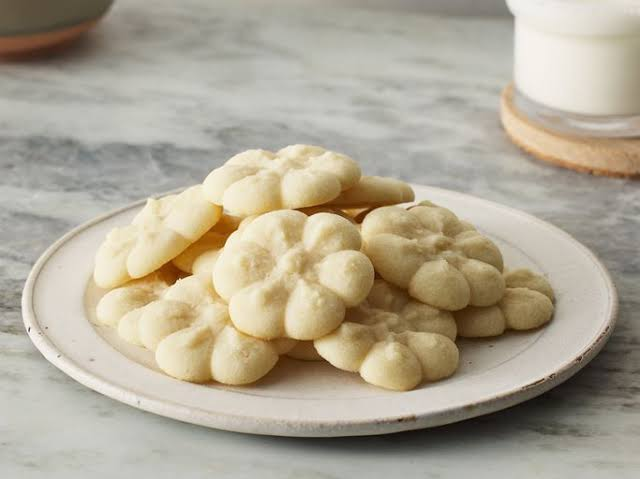

Home
Shortbread Cookies

Description
Shortbread Cookies are deliciously buttery and tender treats with
a soft, melt-in-your-mouth texture. Made with only four simple
ingredients, they’re easy to prepare and make a great addition
to holiday cookie trays or special occasions.
Ingredients
- 2 cups butter, softened
- 1 cup white sugar
- 2 teaspoons vanilla extract
- 4 cups all-purpose flour
Steps:
- Gather all ingredients.
- Preheat the oven to 350 degrees F (180 degrees C).
- Beat softened butter and sugar together in a large bowl with
an electric mixer on medium speed until light and fluufy,
about 3 to 4 minutes.
- Stir in vanilla; add flour gradually, mixing until a smooth
dough forms.
- Fill cookie press with dough and form cookies onto two ungreased
cookie sheets, spacing them about 1 1/2 inches apart. Bake in the
preheated oven until the edges of the cookies are just starting to
turn golden brown, about 10 to 12 minutes.
- Remove the cookie sheets from the oven, and set them on a wire
cooling rack for a few minutes. Then transfer the shortbread cookies
to the rack to cool completely.